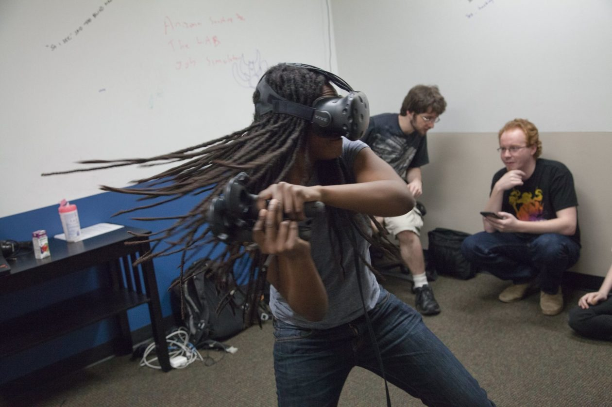

Game Jams: Your Gateway to Fun, Friends, Indie Game Dev, & XR Realities
From 48-hour prototype chaos to shipped games, festival showcases, and lifelong creative alliances.
Demystify game jams, uncover the human connections forged in the crunch, and give you the confidence and toolkit to make your first game.
Larry James (Mod • UpLiftVR) • Tim Cullings (Seattle Indies) • Heather Coles (Orbicular) • Renee Gittins (Stumbling Cat) • Dr. Evie Powell (Niantic Spatial)
Larry James
Solo & Micro-Studio Developer • Community XR Builder • Jammer since Ludum Dare 25

"Larry James is the creative force behind UpLiftVR Studios, where impossible-feeling moments become immersive VR experiences people don't forget. A fixture of Seattle's maker and XR community since founding the VRMakerDome, Larry builds worlds and welcomes anyone curious enough to ask how."
- Pronouns: He/Him
- Title: Founder / Lead Developer (Wulf Design / UpLiftVR)
Bluesky: @wulfdesign.bsky.social
Website: https://wulfdesign.github.io
"You don't need a massive team or a studio budget to build worlds that move people. Start small, ship fast, and find the fun."
Larry James: Crafting Impossible-Feeling Moments
Festival installations, celestial simulations, and community room-scale XR.
UpLiftVR 'Maiden Flight'
A whimsical, semi-interactive VR hot air balloon ascent. Spent nearly a month in the 2018 SIFF VR-Zone, earned praise in The Seattle Times, and was featured on King 5's Evening Magazine.
High Desert Eclipse
A meditative virtual reality experience capturing the eerie, breathless hush of a total solar eclipse. Debuted at KremFest Music Festival and optimized for standalone Meta Quest.
The VRMakerDome (Since 2016)
A mobile room-scale XR dome bringing virtual reality directly to public festivals, makers, and first-time flyers across the Pacific Northwest long before consumer headsets were everywhere.
Tim Cullings
Executive Director, Seattle Indies • Board Treasurer, IGDA • Former GGJ & Oculus
"Tim Cullings (he/him) is a Seattle video games industry veteran and champion for game development and climate science. Executive Director for Seattle Indies, Board Treasurer of IGDA, and formerly Executive Director & Director of Operations at Global Game Jam. Prior to GGJ, Tim worked in Dev Ops and Enterprise Engineering at Oculus helping ship Rift through Quest 2."
- Pronouns: He/Him/His
- Title: Executive Director - Seattle Indies
LinkedIn: linkedin.com/in/timcullings
Hub: timcullings.carrd.co
"Empowering and enabling creators to create and be a part of a supportive community of like-minded people is what makes this industry thrive."
Tim Cullings: Community Building & Global Impact
From 100+ nations in Global Game Jam to local indie incubation right here in Seattle.
Seattle Indies Community
Nurturing thousands of Pacific Northwest creators through regular game jams, socials, playtests, the Seattle Indies Expo (SIX), and operating the GeekGirlCon Gaming Hall right downstairs!
Global Game Jam (GGJ)
Directed worldwide operations for the planet's largest simultaneous game creation event, uniting tens of thousands of developers across over 100 countries every January.
Climate Games & XR Hardware
Advocating for games tackling climate science while leveraging deep enterprise Dev Ops background from the pioneer days of Oculus Rift and Quest 2 hardware.
Heather Coles
Creative Director, Orbicular • Interaction Designer • Cornish College of the Arts

"Heather Coles is a Seattle-based interaction designer and Creative Director at Orbicular. Her career began at a Student RND hackathon leading the team behind Monsantoware. A Cornish graduate with a curiosity for eye-tracking, accessibility, and immersive tech, she's a fixture at game jams as both mentor and maker."
- Pronouns: She/Her
- Studio: Orbicular
Bluesky: @heathercoles.bsky.social
Spotlight: linktr.ee/heathercoles
"Game jams are safe sandboxes to invent strange interfaces, explore tactile feedback, and build quirky games you wouldn't get to pitch anywhere else."
Heather Coles: Tactile Interactions & Playful Tech
Smartwatch toys, casual clickers, and inclusive interface design.
Monsantoware
Her game development journey kicked off at a Student RND hackathon leading the team behind a satirical, chaotic micro-game collection that proved the power of spontaneous team creation.
Tabby Tapper & Frankly Demonic
Tabby Tapper: a casual clicker powered by real-time fluid dynamics. Frankly Demonic: an inventive, playful dress-up toy designed expressly for smartwatches.
Eye-Tracking & Novel Input
Pioneering interactions leveraging eye-tracking, accessibility mechanics, and tactile feedback to ensure games are welcoming and playable for all audiences.
Renee Gittins
Studio Head, Stumbling Cat • Former IGDA Executive Director • Author & Advocate
"Renee leads Stumbling Cat, developers of Potions: A Curious Tale, and is a multi-disciplinary leader with expertise in operations, engineering, and creative direction. Formerly General Manager at Phoenix Labs Vancouver and Executive Director of the IGDA, she chairs the IGDA Alumni Board and is authoring 'The Bad Boss Witch Guide to Rule Your World'."
- Pronouns: She/Her
- Studio: Stumbling Cat | Book: Bad Boss Witch Guide
Bluesky: @rikukat.bsky.social
Website: potionsacurioustale.com
"A game jam strips away overthinking. If a mechanic doesn't feel fun in 48 hours, it's not going to feel fun in 3 years. Constrained design is your superpower."
Renee Gittins: Crafting Potions & Championing Diversity
From early game prototypes to full commercial release and global industry leadership.
Potions: A Curious Tale
An adventure RPG where wits and potion crafting overcome brute combat. Shipped across Steam and consoles, proving that thoughtful, non-violent mechanics can captivate audiences worldwide.
International Dev Leadership
Championed game developers worldwide as Executive Director of the IGDA, fighting for equitable wages, sustainable crunch-free work cultures, and diverse representation.
The Bad Boss Witch Guide
Writing actionable guides to help emerging developers, women, and marginalized creators break into studio leadership, command respect, and build sustainable careers.
Dr. Evie Powell
Staff Software Engineer, Niantic Spatial • Ph.D. Pervasive Game Design • Forever Games Enthusiast

"Evie Powell has a Ph.D. in Pervasive Game Design (ask her what that means!). She has worked on games in industry (Xbox One Kinect, Niantic's Pokémon Go AR, Niantic Spatial's Peridot, and her own games) while specializing in AR/VR and natural user interfaces."
- Pronouns: She / Her
- Studio: Niantic Spatial / Independent Creator
LinkedIn: linkedin.com/in/evie-powell-phd-b078b43/
"Some of my most awesome outcomes came when I decided I wanted to learn something new rather than just win... Jams are fantastic learning sandboxes."
What IS a Game Jam?
Not an endurance grind or a cutthroat hackathon—a weekend celebration of rapid creative prototyping.
Time-Limited
A fixed, short window that cures analysis paralysis and forces you to finish what you start.
Themed Constraints
A surprise prompt revealed at kickoff that levels the playing field and sparks weird ideas.
"Find the Fun"
Zero pressure for commercial polish. The only goal is discovering a playful, delightful interaction.
Atomic Scope
Strip away the 100-page design doc. Build the simplest playable toy that proves the concept.
The "Triple-A" Payoff: Why Jam?
Forget AAA budgets—game jams provide the true Triple-A creative reward.
Zero Stakes Freedom
No stakeholders, no monetization models. You have total creative permission to build the absurd, the avant-garde, and the whimsical.
The Trench Fellowship
Collaborating under tight constraints forges deep bonds. Almost every studio lead on this panel met their key collaborators through game jams.
Thought to Thing
You learn more in one 48-hour weekend sprint than in six months of passive online video tutorials. You ship a real, playable artifact.
Where Do Game Jams Live?
How to find the right event for your schedule, interests, and comfort level.
itch.io / jams
The largest calendar in indie gaming. Browse hundreds of community jams every month—from 3-hour micro jams to relaxed month-long narrative jams.
Global Game Jam (GGJ)
The world's premier simultaneous jam every January. Seattle Indies hosts one of the premier regional sites right here in town!
Cozy & Themed Jams
Look for beginner-focused tags like Twine Jam, Bitsy Jam, Game Boy Jam, or jams with dedicated beginner discord channels.
You DON'T Need to Know How to Code
A game is an entire creative universe. Every artistic and organizational discipline has a superpower.
Artists & Animators
Establish mood, palette, 2D sprites, 3D models, UI buttons, and visual feedback that makes the world pop.
Audio & Foley
Compose catchy soundtrack loops, crunchy sound effects, and ambient soundscapes that carry half the emotion.
Writers & Designers
Craft snappy dialogue, compelling lore, game rules, puzzle setups, and the player's emotional journey.
Producers & Morale
Enforce scope, keep the clock, resolve design impasses, and make sure everyone drinks water and gets rest.
Our First Jams: The Beautiful Chaos
Before shipped titles and studio leadership, we all started in 48-hour caffeine-fueled pandemonium.
SuperChurchFart64
Theme: "You Are The Villain." Built an irreverent, hilarious prototype that proved game creation could be joyous, unpretentious, and completely wild.
Monsantoware
A high-speed satirical micro-game hackathon project with Student RND that unlocked the realization that chaotic collaborative prototyping was a legitimate creative career path.
Dryad
Ludum Dare 34 compo project exploring character mechanics and nature motifs that sharpened core rapid prototyping skills.
Xbox Live Indie Game
Global Game Jam sprint that ended up reviewed on Xbox Live Indie Games, proving a 48-hour jam project can find an audience anywhere!
The "Glorious Failure": When Jams Go Sideways
The greatest lessons in game development come from the catastrophic 2:00 AM disasters.
"What is the jam where everything went completely wrong?"
• Evie's Urban Legend: "Did You Murder Your Wife" (UNCC GGJ) — you had to stash a body to avoid police suspicion while escaping to a boat (you didn't actually murder your wife!). The project became a reddit urban legend!
• Larry's Scramble: Story Spinner (GGJ 2015) — an over-scoped multiplayer card game that turned into a frantic print-and-play scramble 10 minutes before judging.
Why Game Jams Make Failure Safe
In a commercial studio, failure costs thousands of dollars and months of work. In a game jam, failure only costs 48 hours—and leaves you with an unforgettable story and an invaluable lesson you will never repeat.
The Game Jam "Cheat Codes": Surviving the 48 Hours
Tactics and psychological hacks from veteran developers to cross the finish line.
The "One Atomic Verb"
Don't build a massive RPG. Pick ONE single verb (Jump, Brew, Rotate, Shout, Catch) and polish the game feel until that one interaction feels magical.
Learn Rather Than Win
"Some of my most awesome outcomes came when I decided to learn something new rather than win. If you're a coder, focus on audio or lead design. And actually sleep!"
Ruthless Pruning
Saturday night: cut 50% of your planned features. Sunday morning: cut 50% of what remains. A tiny game that is playable and finished beats an ambitious broken menu.
The Butterfly Effect: Jam Serendipity
How a chaotic 48-hour weekend prototype alters life paths, launches studios, and opens doors.
"What magic happened because you entered a jam?"
• Evie: "The Seattle VR hackathons were where I locked in close friendships that really helped my career in AR/VR take off. Those connections led to incredible opportunities I benefit from to this day."
• Larry: Prototyping in Ludum Dare and GGJ paved the way to SIFF VR-Zone showcases and founding UpLiftVR Studios.
The Unspoken Resume
Game developers don't look at degrees—they look at what you've shipped. Having two or three game jam projects on itch.io proves you can scope, collaborate, and cross the finish line.
Social Experiment: The Live Team Finder
What if you walked out of this room today with your next game jam crew already assembled?
Claim Your Card
Identify your primary superpower using our Jam Crew roles (Code, Art, Audio, Narrative, or Producer).
Roll the Spark
Take our 3-prompt random seed (Theme + Verb + Bizarre Twist) on the next slide as your game's creative spark.
60-Second Match
Find someone nearby with a complementary role and pitch your 1-sentence game concept to them!
What is Your Jam Card?
Every legendary game jam team needs a balance of archetypes.
Code Wizard
Logic, physics, movement, turning bugs into features.
Visual Alchemist
Color palettes, 2D sprites, UI, 3D models, visual flair.
Audio Bard
Banging beats, crunchy sound effects, atmospheric tension.
World Architect
Story, lore, game rules, dialogue, player choices.
Guild Guide
Scope wrangler, keeper of the clock, snacks, team cheer.
3 Prompts to Spark a 48-Hour Game
Combine these three seeds to generate your crew's one-sentence pitch.
Turn to your neighbor, share your card role, and pitch your game in 60 seconds!
Your Quest Awaits: How to Jump In Tomorrow
Local Seattle communities and global platforms ready to welcome you with open arms.
Seattle Indies
Join the Discord server (seattleindies.org), attend friendly bi-weekly socials, playtest nights, and meet teams for the next big local jam!
IGDA Seattle
Connect with industry mentors, student programs, and advocacy roundtables focused on fostering inclusive game development.
Global Game Jam & itch.io
Mark your calendar for January's Global Game Jam, or jump into an approachable beginner online jam on itch.io this coming weekend!
Questions & Answers
Ask our panel anything about tools, team finding, imposter syndrome, or surviving the 48-hour crunch.
• Evie's Question: Do you ever do hackathons as part of your day job? Do you recommend it?
• Larry's Topic: Projects born from jam brainstorms that were finished outside the jam.
• Free Tools: Godot, Twine, Bitsy, and Blender for complete beginners.
• Imposter Syndrome: How to stop worrying about code and just make toys.
Visit the Seattle Indies Gaming Hall downstairs in the Skagit Lower Level / 3rd Floor!
Play local games, meet creators, and experience UpLiftVR firsthand!
The Panel Roster & Spotlight Links
Scan any QR code below to explore our projects, games, and communities!